poisson_conf_interval¶
-
astropy.stats.poisson_conf_interval(n, interval='root-n', sigma=1, background=0, conflevel=None)[source] [edit on github]¶ Poisson parameter confidence interval given observed counts
Parameters: n : int or numpy.ndarray
Number of counts (0 <=
n).interval : {‘root-n’,’root-n-0’,’pearson’,’sherpagehrels’,’frequentist-confidence’, ‘kraft-burrows-nousek’}, optional
Formula used for confidence interval. See notes for details. Default is
'root-n'.sigma : float, optional
Number of sigma for confidence interval; only supported for the ‘frequentist-confidence’ mode.
background : float, optional
Number of counts expected from the background; only supported for the ‘kraft-burrows-nousek’ mode. This number is assumed to be determined from a large region so that the uncertainty on its value is negligible.
conflevel : float, optional
Confidence level between 0 and 1; only supported for the ‘kraft-burrows-nousek’ mode.
Returns: conf_interval : numpy.ndarray
conf_interval[0]andconf_interval[1]correspond to the lower and upper limits, respectively, for each element inn.Notes
The “right” confidence interval to use for Poisson data is a matter of debate. The CDF working group [recommends][pois_eb] using root-n throughout, largely in the interest of comprehensibility, but discusses other possibilities. The ATLAS group also [discusses][ErrorBars] several possibilities but concludes that no single representation is suitable for all cases. The suggestion has also been [floated][ac12] that error bars should be attached to theoretical predictions instead of observed data, which this function will not help with (but it’s easy; then you really should use the square root of the theoretical prediction).
The intervals implemented here are:
1. ‘root-n’ This is a very widely used standard rule derived from the maximum-likelihood estimator for the mean of the Poisson process. While it produces questionable results for small n and outright wrong results for n=0, it is standard enough that people are (supposedly) used to interpreting these wonky values. The interval is
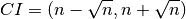
2. ‘root-n-0’ This is identical to the above except that where n is zero the interval returned is (0,1).
3. ‘pearson’ This is an only-slightly-more-complicated rule based on Pearson’s chi-squared rule (as [explained][pois_eb] by the CDF working group). It also has the nice feature that if your theory curve touches an endpoint of the interval, then your data point is indeed one sigma away. The interval is
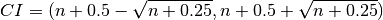
4. ‘sherpagehrels’ This rule is used by default in the fitting package ‘sherpa’. The [documentation][sherpa_gehrels] claims it is based on a numerical approximation published in [Gehrels 1986][gehrels86] but it does not actually appear there. It is symmetrical, and while the upper limits are within about 1% of those given by ‘frequentist-confidence’, the lower limits can be badly wrong. The interval is
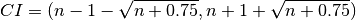
5. ‘frequentist-confidence’ These are frequentist central confidence intervals:
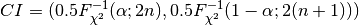
where 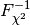 is the quantile of the chi-square distribution with the indicated number of degrees of freedom and
 is the one-tailed probability of the normal
distribution (at the point given by the parameter ‘sigma’). See
[Maxwell 2011][maxw11] for further details.
is the one-tailed probability of the normal
distribution (at the point given by the parameter ‘sigma’). See
[Maxwell 2011][maxw11] for further details.6. ‘kraft-burrows-nousek’ This is a Bayesian approach which allows for the presence of a known background
 in the source signal
in the source signal
 .
For a given confidence level 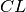 the confidence interval
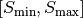 is given by:
.
For a given confidence level 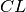 the confidence interval
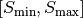 is given by: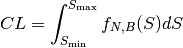
where the function 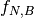 is:
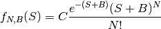
and the normalization constant
 :
: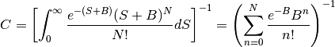
See [KraftBurrowsNousek][kbn1991] for further details.
These formulas implement a positive, uniform prior. [KraftBurrowsNousek][kbn1991] discuss this choice in more detail and show that the problem is relatively insensitive to the choice of prior.
This functions has an optional dependency: Either scipy or mpmath need to be available. (Scipy only works for N < 100).
Examples
>>> poisson_conf_interval(np.arange(10), interval='root-n').T array([[ 0. , 0. ], [ 0. , 2. ], [ 0.58578644, 3.41421356], [ 1.26794919, 4.73205081], [ 2. , 6. ], [ 2.76393202, 7.23606798], [ 3.55051026, 8.44948974], [ 4.35424869, 9.64575131], [ 5.17157288, 10.82842712], [ 6. , 12. ]])
>>> poisson_conf_interval(np.arange(10), interval='root-n-0').T array([[ 0. , 1. ], [ 0. , 2. ], [ 0.58578644, 3.41421356], [ 1.26794919, 4.73205081], [ 2. , 6. ], [ 2.76393202, 7.23606798], [ 3.55051026, 8.44948974], [ 4.35424869, 9.64575131], [ 5.17157288, 10.82842712], [ 6. , 12. ]])
>>> poisson_conf_interval(np.arange(10), interval='pearson').T array([[ 0. , 1. ], [ 0.38196601, 2.61803399], [ 1. , 4. ], [ 1.69722436, 5.30277564], [ 2.43844719, 6.56155281], [ 3.20871215, 7.79128785], [ 4. , 9. ], [ 4.8074176 , 10.1925824 ], [ 5.62771868, 11.37228132], [ 6.45861873, 12.54138127]])
>>> poisson_conf_interval(np.arange(10), ... interval='frequentist-confidence').T array([[ 0. , 1.84102165], [ 0.17275378, 3.29952656], [ 0.70818544, 4.63785962], [ 1.36729531, 5.91818583], [ 2.08566081, 7.16275317], [ 2.84030886, 8.38247265], [ 3.62006862, 9.58364155], [ 4.41852954, 10.77028072], [ 5.23161394, 11.94514152], [ 6.05653896, 13.11020414]])
>>> poisson_conf_interval(7, ... interval='frequentist-confidence').T array([ 4.41852954, 10.77028072])
>>> poisson_conf_interval(10, background=1.5, conflevel=0.95, ... interval='kraft-burrows-nousek').T array([ 3.47894005, 16.113329533])
[pois_eb]: http://www-cdf.fnal.gov/physics/statistics/notes/pois_eb.txt
[ErrorBars]: http://www.pp.rhul.ac.uk/~cowan/atlas/ErrorBars.pdf
[ac12]: http://adsabs.harvard.edu/abs/2012EPJP..127...24A
[maxw11]: http://adsabs.harvard.edu/abs/2011arXiv1102.0822M
[gehrels86]: http://adsabs.harvard.edu/abs/1986ApJ...303..336G
[sherpa_gehrels]: http://cxc.harvard.edu/sherpa4.4/statistics/#chigehrels
[kbn1991]: http://adsabs.harvard.edu/abs/1991ApJ...374..344K